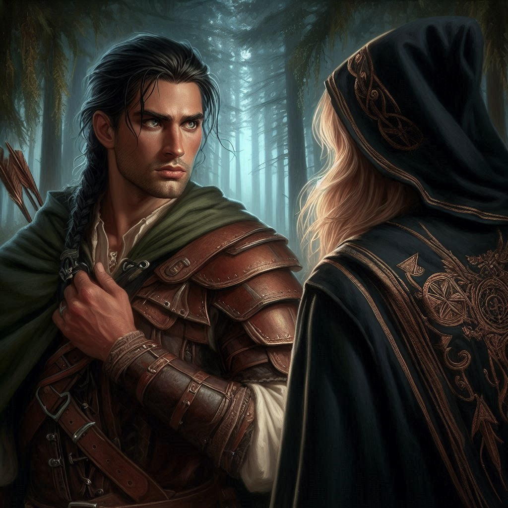
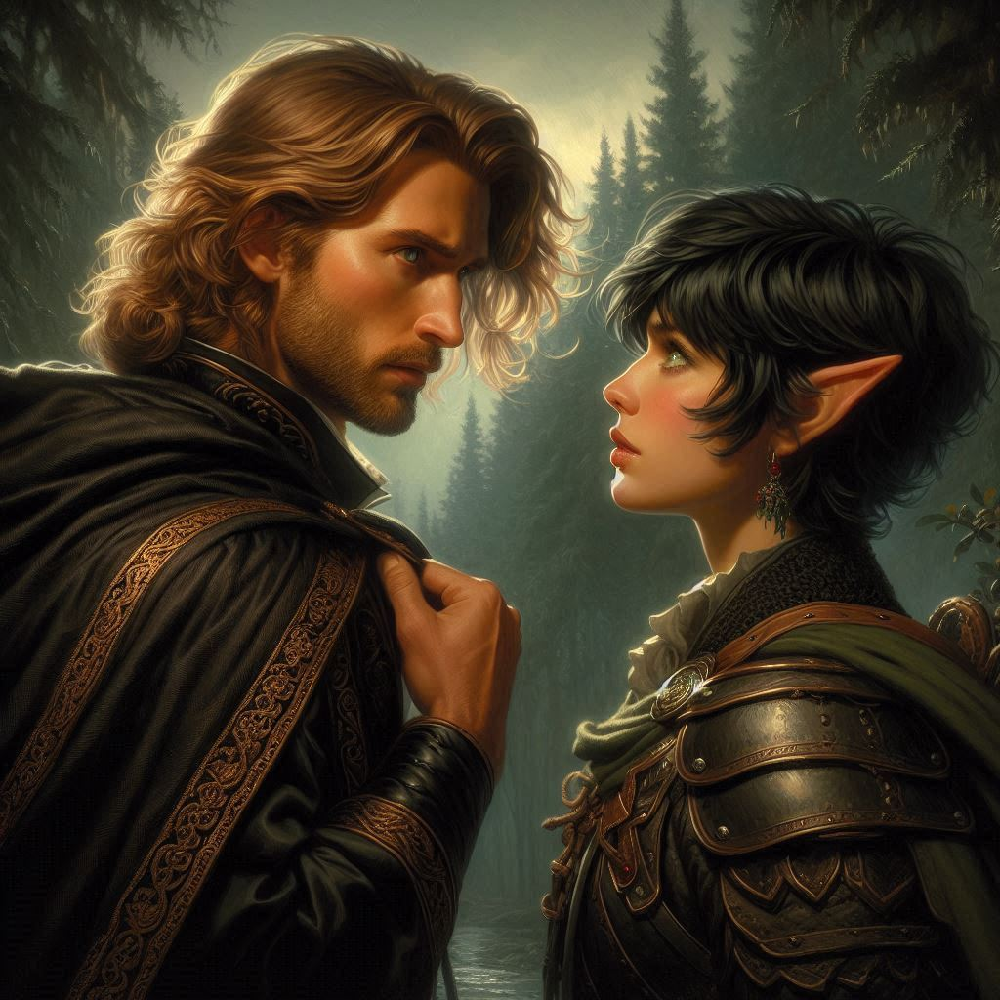

The Triangle
Baider gags the captured mercenary and lashes him to a tree. The man struggles briefly but soon realizes he is impotent to escape. The night is thick with tension as you and Baider sneak through the dark woods toward the mercenaries’ camp. You’ve planned this carefully—Onyx’s life depends on it—but the weight of your decisions feels heavier with every step. The quiet chirping of crickets and the soft rustle of leaves are the only sounds accompanying your silent movements. The mercenary camp is at the base of Hemlock Falls, the fabled location of the entrance to Hemlock Caverns.
Baider grunts beside you, a grim determination on his face. He has been uncharacteristically silent since you decided to pursue this rescue, and you know he’s worried. Not just for Onyx—but for you. The knowledge of Varis’s dark plot and Jorsh’s involvement has only deepened the shadows that linger between you.
As the campfire flickers in the distance, your heart pounds in your chest. You suspect that Onyx is there, bound and helpless. If you don’t act fast, the mercenaries will move Onyx into the caves. Varis’s ritual will begin, and you might never see the old dwarf again. You draw your bow and notch an arrow, putting your sights on the mercenary closest to tent where Onyx is likely being held. You will have to take out multiple fighters while Baider rushes in to rescue his estranged friend.
But as you step closer, something catches your eye—a figure, moving through the trees on the opposite side of the camp. You swivel and place the tip of your arrow on the form moving toward you through the trees. Then, recognition flashes in your mind. It’s Elias.
He emerges from the shadows, his eyes locking onto yours with a mixture of relief and frustration. You lower your bow and sigh with relief. His presence is both reassuring and complicating at the same time. You creep toward him, careful not to alert the guards nearby.
“What are you doing here?” you whisper, your voice barely audible. Elias glances toward the mercenaries, his jaw clenched.
“I’ve been tracking you since you left the village,” he says, his tone sharp. “You should have told me what you were planning.”
“I couldn’t risk it,” you reply, guilt tugging at you. “There wasn’t time.”
Before Elias can respond, a new figure steps out from the shadows, and the atmosphere shifts like a cold wind. You raise your bow again, drawing the bowstring back to your jaw. You can’t believe your eyes. It’s Jorsh.
Baider steps from behind the tree where he was hiding, the muscles in his green arms rippling as he raises his axe defensively toward Jorsh. Your stomach twists. He stands tall, his eyes colder than you remember, the weight of his own agenda pressing down on the moment. His presence pulls you in two directions—one part of you longing to understand him, the other terrified of what he’s become.
“Baider,” Jorsh says contemptuously toward the half-orc. “Aren’t you getting a little old to be out trying to protect your little girl?” Jorsh turns his attention to Elias, looking down his sharp nose at your over-protective work partner. He makes no attempt to hide his sneer, his voice low and dangerous as he sizes up Elias. “Tell me you have a better plan than this, Kira.”
Elias steps forward, his fists clenched. “I’m here to protect her from people like you.”
“And who’s going to protect her from you?” Jorsh shoots back, stepping closer. “You think you’re the only one who cares about her?”
“Settle down, lads,” Baider growls, “before I take both your heads off. We’re here to rescue Onyx and get out of here. Not get all mixed up in some cock-blocking love triangle.”
The tension between the two men and your adoptive father feels like the first winds of a pounding thunderstorm on the horizon. You can feel the weight of their eyes on you, their unspoken competition as thick as the night around you. The mercenaries just feet away might as well be a distant memory—the real battle is here, between loyalty, love, and something far more dangerous.
“Kira,” Jorsh says, his voice softening slightly as he turns his attention fully to you. “We can end this—together. Varis is a threat to everyone, not just Belladonna. I have the other half of the map. You need me to stop him.”
Elias cuts in. “He’s using you. You can’t trust him, Kira. Whatever he’s planning, it’s not worth the risk.”
“I agree,” Baider says. “Let’s get Onyx and get the hell out of here.”
You glance between them, heart racing. Jorsh pulls something from his cloak—a weathered piece of parchment. It’s the half of the map you’ve been looking for, the one that leads to the portal deep within Hemlock Caverns. Your fingers itch to reach for it, but something in Elias’s eyes holds you back.
“Look, I get it,” Jorsh continues, stepping closer. “You don’t want to trust me. But Varis is after something far worse than you realize. If that portal opens, the entire realm is in danger. I need you to trust me, just this once.”
Elias’s hand moves to his sword, his protective instincts flaring. “And what happens after we stop Varis? You disappear into the night again, leaving her to pick up the pieces? I won’t let you drag her into your revenge.”
Jorsh’s eyes darken. “This isn’t about revenge, Elias. This is about saving everyone. You think you can do that by holding her back?”
You feel the weight of both their expectations pressing down on you, suffocating in its intensity. Elias is right—Jorsh’s motives have always been murky, driven by anger and pain. But part of you understands that Jorsh is fighting for something bigger than just himself. And you… you’re caught in the middle.
Baider’s presence behind you is a silent reminder that time is running out. The mercenaries will move Onyx soon, and if you don’t act, everything could be lost. But whose path will you follow?
"What about Onyx?" Baider asks Jorsh, a dangerous edge to his words.
"Varis has alread taken a small group of dark elves into the cavern with Onyx in tow," Jorsh confesses. "We need to move quickly."
You can't be sure Jorsh is telling the truth. He might be lying to get you to go with him into the cavern. You want to rush into the camp and make sure Onyx really isn't there, but time is of the essence. If he's not there, precious minutes will be lost, and Various may already be too far ahead of you.